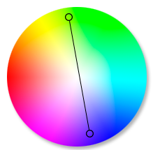

| Цветовые функции | ||
|---|---|---|
|
Цветовые функции С помощью LESS-функции spin можно повернуть цветовое колесо на определённый угол относительно заданного цвета и получить новый цвет. Функция принимает два параметра. 60 град от базового цвета - error -60 град от базового цвета - info |
|
Цвет можно задавать в любом цветовом формате. Значение угла может быть как положительным, так и отрицательным. При положительном угле функция повернёт колесо по часовой стрелке, при отрицательном — против. Противоположный цвет на колесе называется комплементарным. Он находится под углом 180° к заданному цвету. Комплементарные цвета используют для создания контраста.  |
| Цветовые функции | ||
| Цветовые функции |
|
|